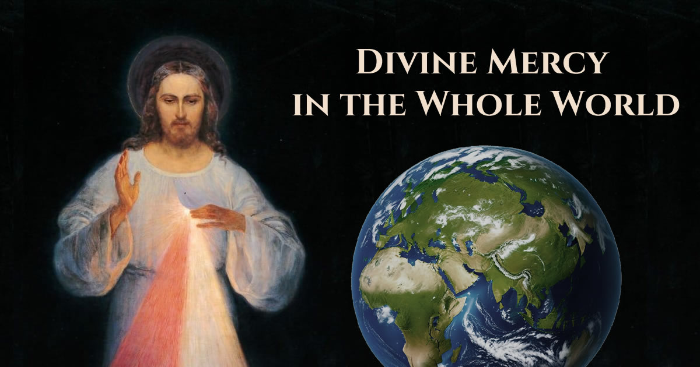

La Miséricorde Divine dans le monde entier
Le projet "La Miséricorde Divine dans le monde entier" est né avec l'intention de diffuser les messages d'espérance et d'amour que Jésus a donnés à l'humanité à travers les révélations à Sainte Faustine Kowalska, avec le soutien fondamental et le guide spirituel du Bienheureux Michel Sopoćko. Dans une époque marquée par de profondes incertitudes, cette initiative se propose de rendre accessible à toute personne, aux quatre coins de la planète, la source intarissable de la Miséricorde Divine, en brisant les barrières linguistiques et géographiques.

Description du projet "La Miséricorde Divine dans le monde entier"
L'écosystème du projet s'articule à travers le développement de plateformes numériques, d'applications mobiles et une solide présence sur les réseaux sociaux. L'objectif est de créer un réseau interconnecté permettant aux fidèles de se rapprocher de la prière quotidienne, d'approfondir les écrits spirituels et de rester informés des initiatives mondiales. Le projet comprend :
App Android Miséricorde Divine
Une application entièrement native conçue pour accompagner le fidèle dans sa prière quotidienne. Développée avec les technologies matérielles de smartphone les plus modernes, l'application comprend la récitation guidée du Chapelet de la Miséricorde Divine avec un moteur audio professionnel qui fonctionne même lorsque l'écran est éteint (en arrière-plan), la sauvegarde automatique de la progression pour les 9 jours de la Neuvaine et un système de notifications locales pour le rappel solennel de 15h00 (l'Heure de la Miséricorde). L'application est conçue pour fonctionner entièrement hors ligne, garantissant l'accès aux textes sacrés et aux méditations à tout moment et sans consommer de données.


Site web Jésus Miséricordieux
Développement et gestion du portail web multilingue, conçu comme une archive spirituelle et historique permanente. En plus de rassembler la vie et les écrits de Sainte Faustine, le site propose des sections dédiées aux dernières actualités et des analyses historiques approfondies sur les lieux saints de Lituanie (en particulier Vilnius) où se sont déroulés les événements les plus significatifs de la Miséricorde et où le premier Tableau original a été peint. Les contenus sont structurés pour une navigation fluide et accessible depuis n'importe quel appareil.
Visiter le Site : www.gesumisericordioso.orgRéseaux Sociaux
Création, soin et mise à jour constante de canaux dédiés, actuellement actifs via la Page Facebook, le Groupe Facebook et le profil Instagram. Cette présence sur les réseaux sociaux permet de maintenir la communauté vivante jour après jour, en proposant des pensées spirituelles quotidiennes, des visuels dédiés et des phrases inspirantes extraites directement du Petit Journal de Sainte Faustine Kowalska, favorisant ainsi le partage et le soutien mutuel dans la prière entre les membres.
Développements futurs
L'intention profonde du projet est de s'étendre constamment pour toucher chaque culture. Dans nos plans futurs, il est prévu d'intégrer de nouvelles langues tant pour le site que pour l'application, élargissant ainsi l'accès à un nombre toujours plus grand de nations.
Une étape fondamentale sera l'inclusion systématique dans les outils numériques et sur les réseaux sociaux des écrits du Bienheureux Michel Sopoćko, actuellement presque totalement inédits ou disponibles exclusivement en langue polonaise. De plus, nous travaillons à la mise en œuvre d'un système de diffusions en direct depuis Vilnius, offrant aux fidèles du monde entier la possibilité de prier via une connexion vidéo directe devant les lieux historiques de la Miséricorde, créant ainsi une véritable, grande et active communauté internationale.
Vous souhaitez collaborer ?
Si vous ressentez dans votre cœur le désir de soutenir cette mission, n'hésitez pas à nous contacter. Les besoins sont multiples et chaque charisme peut faire la différence. Vous pouvez nous aider activement dans divers domaines :
- Révision et correction des textes traduits dans les différentes langues étrangères.
- Rédaction d'articles, d'approfondissements historiques et de contenus textuels.
- Écriture de commentaires théologiques et d'indications spirituelles pour accompagner les phrases de la Miséricorde Divine (collaboration ouverte en particulier aux prêtres, religieux et consacrés).
- Gestion technique et modération des communautés sur les réseaux sociaux.
- Création de contenus graphiques, vidéo et multimédias pour les canaux sociaux.
Contactez-nous directement à : info@gesumisericordioso.org